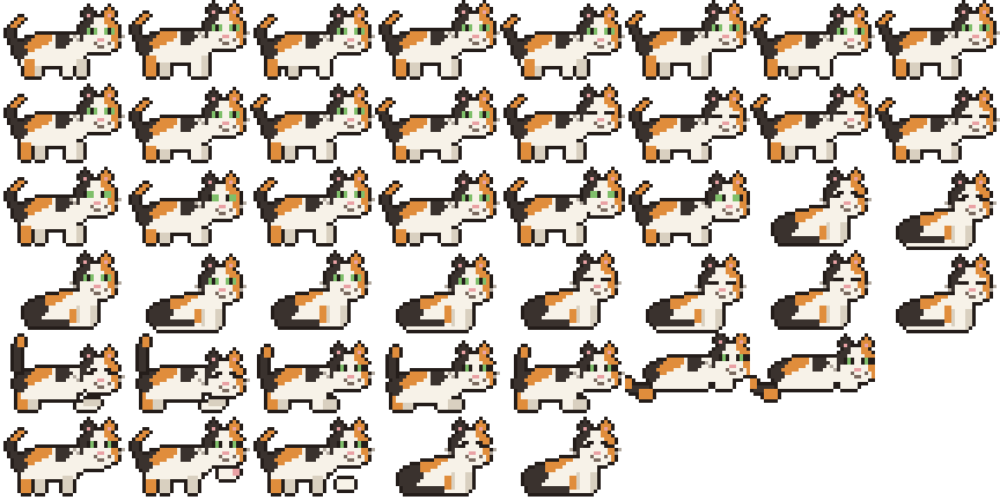

Sprite Sheet Matrix (8 columns × 4 rows)

Row 0: Walk cycle (frames 0-3 with tail 0, frames 0-3 with tail 1)
Row 1: Stand & Idle (breathing bobs, tail sways, natural blinks)
Row 2: Looking around (backward glance, forward, forward glance) & Sitting
Row 3: Sitting poses (breathing bobs, tail tip curls, blinks)